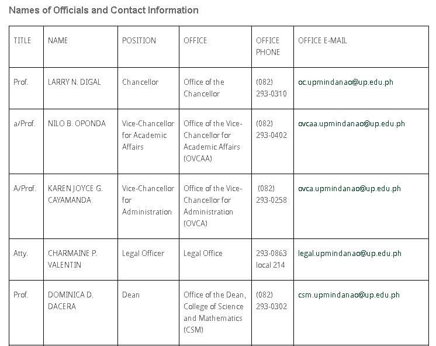
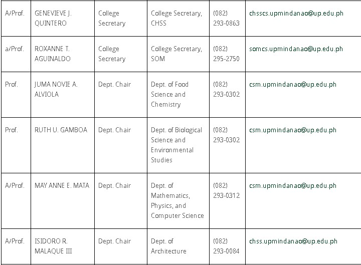
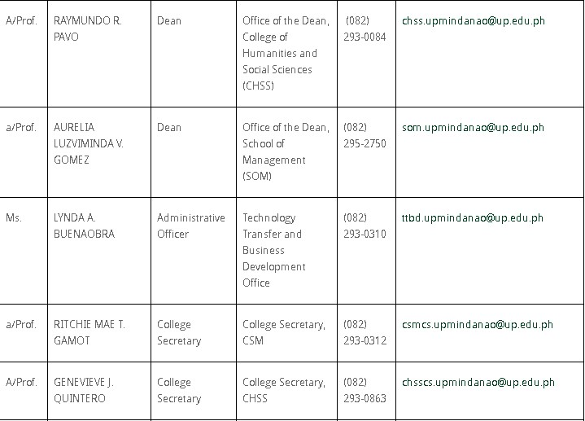
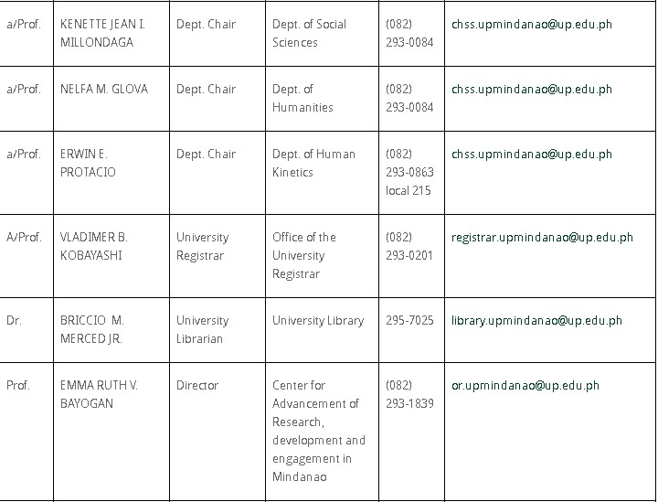
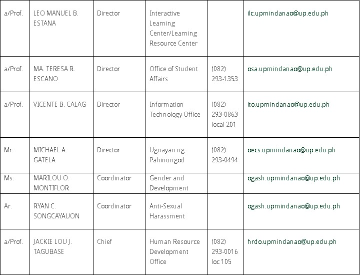
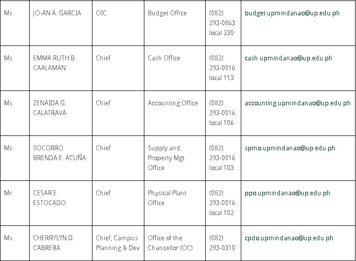
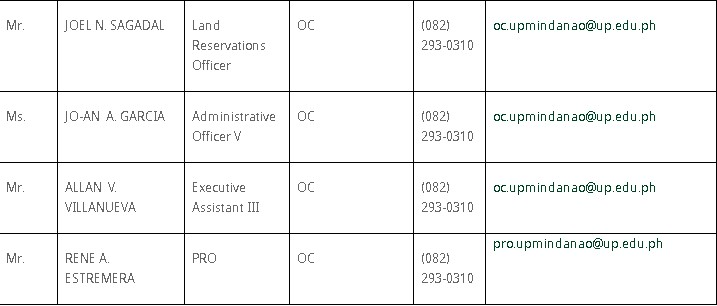

UNIVERSITY OF THE PHILIPPINES MINDANAO
Shaping minds that shape the nation
History
Republic Act 7889, An Act Creating the University of the Philippines in Mindanao, was signed into law by President Fidel V. Ramos on February 20, 1995. But the vision of having a UP in Mindanao however started way before that.
The UP Alumni Association-Davao Chapter, which was established on December 3, 1949, had wanted for more than two decades for the establishment of a UP in Mindanao. As early as 1961, the UP Summer School already offered extension courses in Law, Business Administration and Education, with the old location of the Davao Central Elementary School as venue.
On November 24 and 25, 1989, the UPAA Davao Chapter hosted the 12th UP Alumni Institute with Senator Vicente Paterno as keynote speaker. UP President Jose Abueva, who attended the conference, was confronted with the strong and united voice of about 630 alumni in attendance as well as the media and the business sector, all clamoring for a resolution that would promote the establishment of a UP in Mindanao in Davao City. The resolution was unanimously approved and adopted by the Institute on November 25, 1989. This was submitted to the UPAA National and endorsed to the Board of Regents.
The vision of UP in Mindanao began to materialize when, on the third regular session of the House of Representatives on April 30, 1990, 1st District Representative Prospero C. Nograles introduced House Bill No. 30358, also known as an “Act to establish the University of the Philippines in Mindanao.”
A public hearing on HB No. 30358 was conducted by Senator Edgardo Angara (then Chairman of the Senate Committee on Education) on October 12, 1990 at the Davao Chamber of Commerce, Kalakalan Hall. It was sponsored by Representative Nograles and Rodolfo del Rosario of Davao del Norte. A strong sentiment for the establishment of a UP in Mindanao pervaded the public hearing. To alleviate the strong clamor for a UP in Mindanao, Abueva created instead the UP Consortium System, much like the Open University.
When Abueva’s term ended, President Fidel V. Ramos appointed Emil Q. Javier as UP President. President Ramos had previously instructed President Javier to create a fact-finding committee composed of Regents Oscar Alfonso, Vice-President for Planning Fortunato dela Peña, Atty. Carmelita Yadao-Guno and Prof. Rogelio Cuyno. The committee came to Davao for an ocular inspection of University of Southern Philippines (USP) in Bago Oshiro.
After receiving the committee report, Javier did not pursue the plan to convert USP to UP in Mindanao due to the resistance demonstrated by the USP faculty and staff. Instead, he opted for congressional action. At the same time, the committee also talked with the National Bureau of Plant and Industry director Nerios Roperos for the segregation of 204 hectares of the BPI area in Bago Oshiro for the UP in Mindanao campus. The task of pursuing the House Bill for UP in Mindanao in Congress was given to Davao City 3rd District Congressman Elias B. Lopez, as he was the only UP alumnus among the Davao representatives.
Republic Act 7889, the bill creating UP in Mindanao was finally enacted into law on February 20, 1995. On March 22 of the same year, the Board of Regents passed a resolution officially creating the University of the Philippines in Mindanao. To emphasize the importance of RA 7889 to the Mindanaoans, a reenactment of the signing was held at the Central Bank, Davao City with President Fidel V. Ramos himself in attendance.
The Lee Business Center in J. Luna corner J. dela Cruz Streets and the Casa Mercado Building in Matina served as UP in Mindanao’s home from March to September 1995, and from September to January 1996, respectively.
On June 1996, the College of Arts and Sciences and the School of Management were created. After a year, the CAS was split into the College of Humanities and Social Sciences and the College of Science and Mathematics. The School of Management was retained.
On February 20, the Oblation was installed in Bago Oshiro during the University’s 3rd Foundation Anniversary. The Board of Regents granted full autonomy to UP in Mindanao, on February 26, 1998, making it the sixth constituent unit of the UP System. Dean Rogelio V. Cuyno, was elevated and installed as its 1st Chancellor on December 11, of the same year.
The 2nd Chancellor was Ricardo de Ungria, the 3rd Chancellor was Gilda C. Rivero, and the 4th and present Chancellor is Sylvia B. Concepcion.
Reviewed: RAE, 24 August 2017
Vision
EXCELLENCE. “EXCEL in Leadership, Education, Nationalism, Cultural sensitivity, and Environmental nurturance”.
Mission
The University of the Philippines Mindanao is committed to lead in providing affordable quality education, scholarly research, and responsive and relevant extension services to diverse, marginalized and deserving sectors in Mindanao and neighboring regions through its programs in the sciences and the arts, inculcating a passion for excellence, creative thinking, and nationalism in the context of cultural diversity in a global community.
Contact Us





